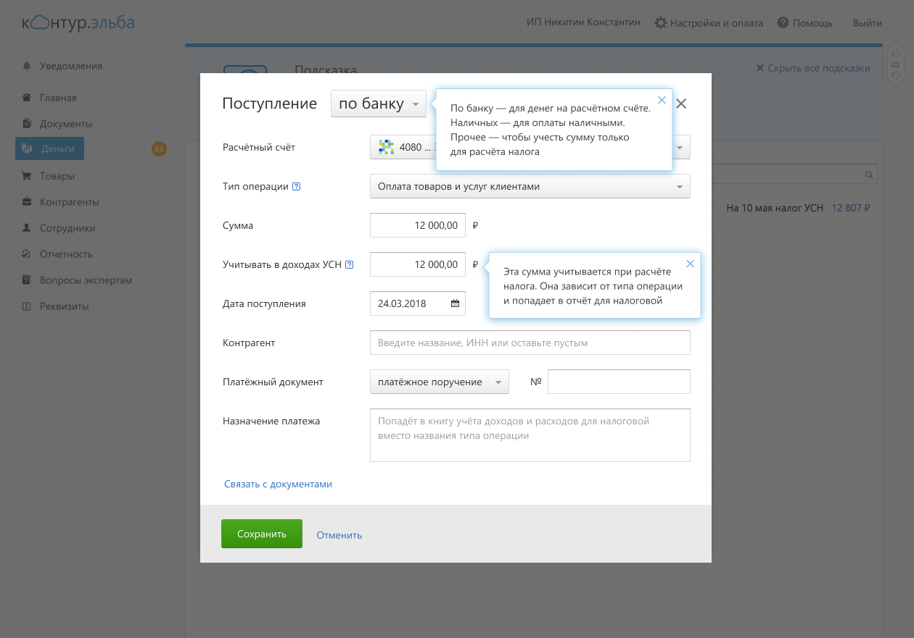
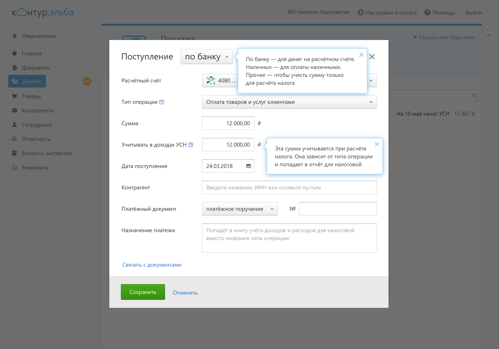
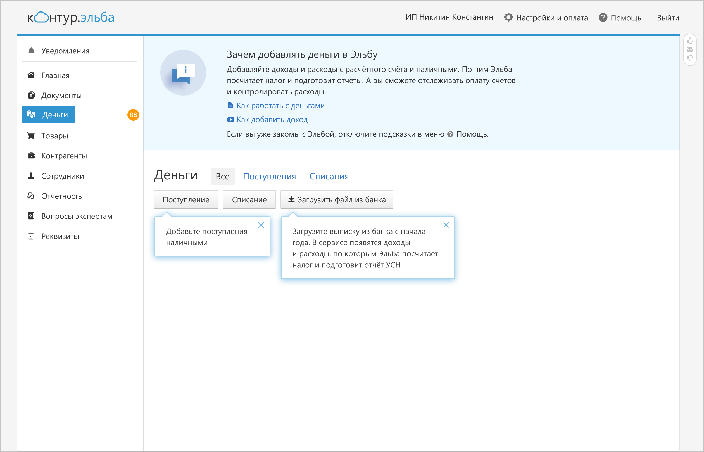
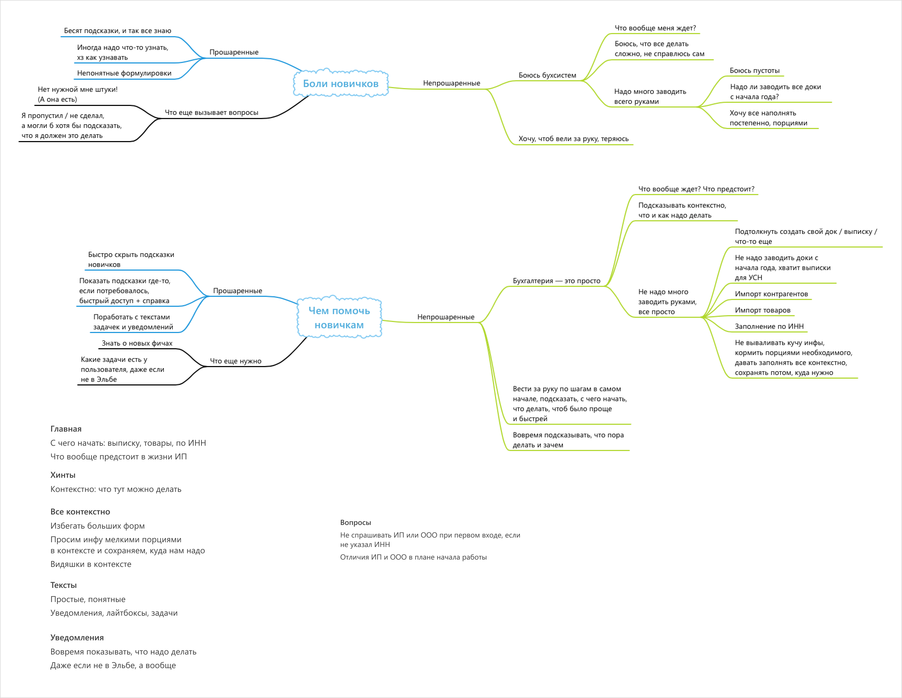
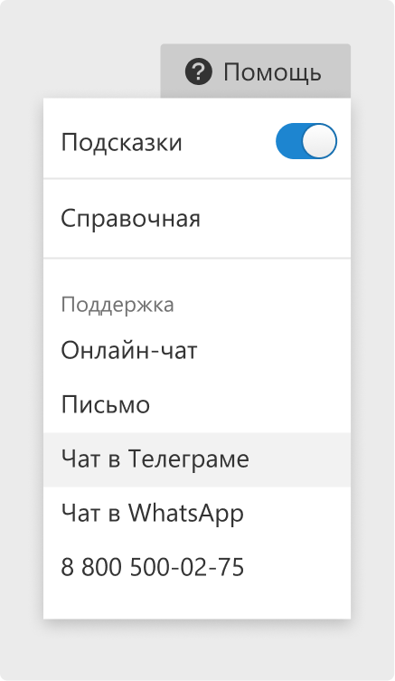

Онбординг для новых пользователей Эльбы
Эльба — интернет бухгалтерия для ИП и ООО. Пользователи — предприниматели, директора.
Задача
С годами Эльба обросла возможностями. Появилась задача сориентировать новых пользователей, чтобы они не терялись в новом для них сервисе.
Решение
Я разработала систему подсказок и их поведение. Часть подсказок играет навигационную функцию и ведет пользователя буквально «за ручку» — это всплывающие тултипы. Их цель — чтобы пользователь не растерялся в обилии информации, функциональности и нашел самое необходимое.
 

Другая часть подсказок выполняетинформационную функцию, рассказывает, для чего нужен тот или иной раздел в сервисе, что происходит на этой странице — это блок текста в верхней части основных разделов. Иногда там есть ссылки на полезные статьи и видео из Справочной Эльбы для тех, кто хочет знать больше. Эти подсказки помогают пользователям справляться со своими задачами.
Для решения задачи онбординга я изучала интервью с пользователями, где они делились своим опытом начала ведения бухгалтерии. Всю информацию я агрегировала в схему, делала заметки по ключевым моментам:
Часть пользователей оказалась «знающей», они понимали, что их ждет в предпринимательской жизни, их раздражали лишние подсказки. Но при этом они иногда не находили нужные кнопки, какие-то возможности. Другая часть пользователей боялась бухсистем, не понимала, что их ждет, боялась не справиться. Они хотели, чтобы их «вели за ручку» и обо всем рассказывали.
Нужно было разработать решение, которое будет ненавязчиво рассказывать о продукте. Я сделала подсказки отключаемыми. Они включены по умолчанию при первом входе в сервис, но их можно выключить, чтобы не раздражали.
Кроме этого, мы ограничили число навигационных подсказок на странице — максимум три подсказки. Они исчезают навсегда, если пользователь закрыл их крестиком или переходил в раздел, на который они указывают. То есть они не беспокоят пользователя излишне.
Информационные подсказки с пояснениями к разделу в верхней части страницы видны всегда, не исчезают, пока включен режим подсказок. Информация на них полезна не только при первом визите, но и при дальнейшей работе в сервисе.